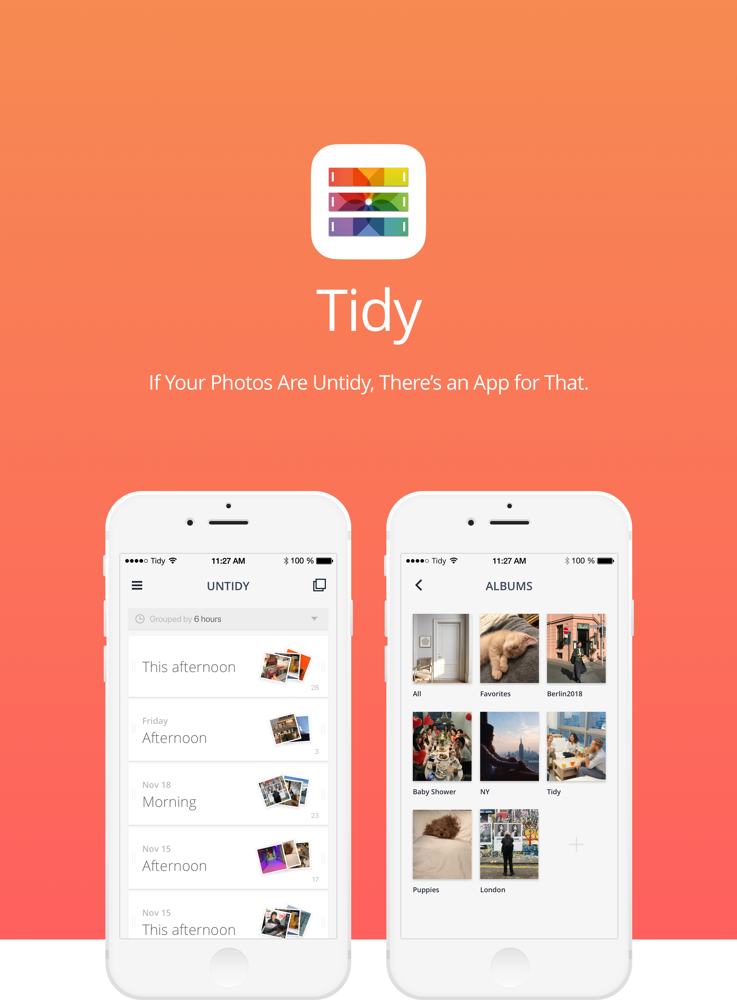
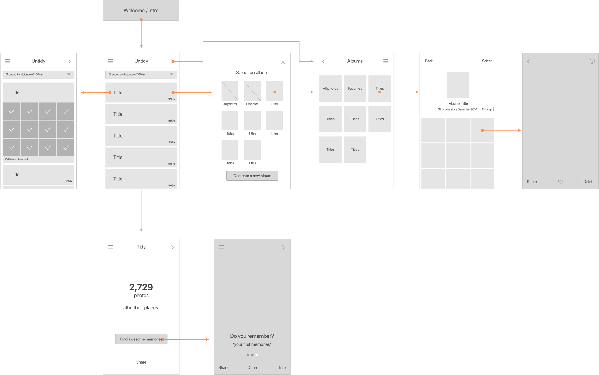
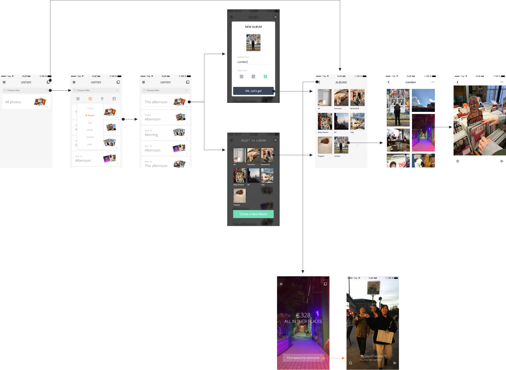
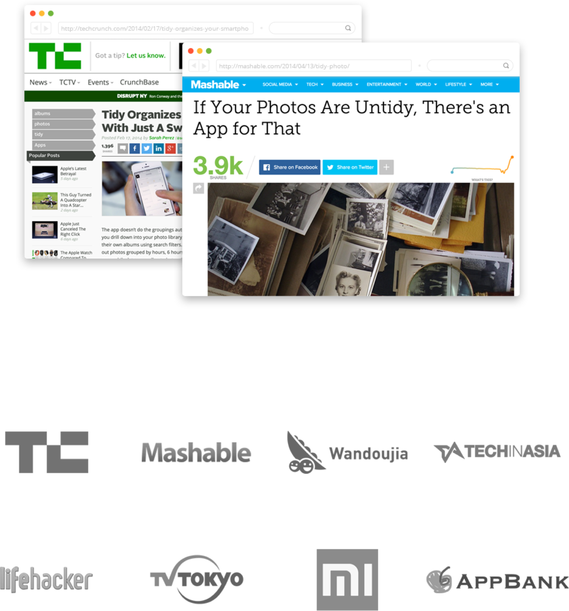

-
Client — TIDY INC.
-
Project — Art direction + App design
-
Year — 2013
-
Website — www.tidyalbum.com
- Tidy - Photo Albums
- Tidy Photo Albums helps to organize thousands of photos on your phone with just one swipe.
User can easily make an album using filters which can sort photos with Time, Distance and Size.
And also Tidy offers a feature called 'Find memories' which allows the user to enjoy their forgotten memories.

“If Your Photos Are Untidy,
There’s an App for That.”
Tidy is a photo album app created for the thousands of photos on devices that the OS default photo app could not solve. At the time of planning the app, cameras on mobile phones were getting better and taking photos was becoming more common. But after seeing thousands of photos taken every day, we wanted to make it easier to manage them on our devices with albums and enjoy these memories in this simple way.
My Role
I joined up as a Product Designer and worked on the overall design tasks ranging from Products to Marketing and Branding. When PM defined the functions,
I made an interfaces with PM and developers. After launching the product, Brand Identity was created to promote and strengthen the brand. And because it is
a start-up company, I collected user feedback by myself doing customer service and ran operation and update.
Why we make this
• At the time of Tidy's creation it was running on iOS 6, and in Photos were
a cluster of photos taken and displayed on a single screen, just like in 'Camera
roll’. Therefore, the more photos you took the harder it was for you to enjoy
them all and remember meaningful shots taken in the past, also how it would be
difficult to find certain photos. Photographs start to become scrap that cannot
be erased.
• iOS 7 released, users can now organize their photos in albums, but iOS 7
does not have a convenient structure to organize photos nor does it have the
functions to help organize them as well.
• Every time a new smartphone was released, manufacturers were building better
cameras in smartphones. Digital cameras were soon dying off, and it was
becoming more natural for users to use their smartphones to take photos. But
users still couldn't manage their photos after taking them.
Affinity Diagram
I joined up as a Product Designer and worked on the overall design tasks ranging from Products to Marketing and Branding. When PM defined the functions, I made an interfaces with PM and developers. After launching the product, Brand Identity was created to promote and strengthen the brand. And because it is a start-up company, I collected user feedback by myself doing customer service and ran operation and update.
Approach & Ideas
Positioning
iOS has no Default album app. It would be my wish for
Tidy to become the Default photo album app for iOS.
To make it become more like the Default App, the Human Interface Guide was fully protected. (UI, UX, App Icon, etc.)
Untidy & Tidy
The UI structure was divided into three places (screens).
The 'Untidy’ screen contained unorganized photos,
the ‘Albums’ screen contained photo albums, and the ‘Archive’ screen collected photos that were not included
in the album.
*At the time, iOS could not immediately delete photos from the client app,
so it had to create an Archive. Android has a delete function instead of Archive
because it can delete photos.
Make it EASY
In order to make organizing photos easily, we created and provided a filter that can be sorted by using information such as locations (distances), times (dates), and sizes.
Pictures grouped through the filter are shown on the card, and users can create an album of the pictures tied to the card with a simple swipe.
Rewarding Memories
After organizing thousands of photos on devices, we
wanted users to feel rewarded.
Through organizing on Tidy, we wanted everyone to find memories they may had forgotten and to enjoy expressing themselves in the beautiful craft of taking photos.
Initial UI & Wireframe

UI Design

Prototyping


Insight
• When first using the app, the task of organizing thousands of unorganized
photos was becoming an obstacle to use the app. So we added a function called
Abracadabra, which creates an automatic album on its first use to give the user
a sense of satisfaction when an album is created, so we decided to introduce this
function on the app.
• After one year of monitoring, 12% of users were not able to see the main screen.
Shortening of Onboarding was necessary.
• There were other requests that were made under the service, but some of them
were not implemented because they were client apps. We looked at the indicators
and found the things that could be improved as much as possible and added
functionality.
◦ Undo function
◦ Request to synchronize with OS album
◦ Secret album and locking functions
• It was unfortunate that the app itself could not delete the photos because it was
a client app, but fortunately, the iOS was updated and the deletion function was
added.
Impact
People needed photo albums. Tidy recorded 540,000 downloads on iOS and 680,000 downloads on Android in over a year. And soon after its opening, it was featured as the Best New App on iTunes App stores in 15 countries in Asia and 20 countries in Europe. Tidy was also reviewed in IT media and was featured on sites Mashable, TechCrunch, and LifeHacker.

Learning
Lack of ‘Test’
Through this experience, I have learned that it is very important to test beforehand.
Once the app was created, it was not easy to fix because it takes a lot of resources to build the service.
It’s true that although we recruited beta-testers and received feedback before launching, feedback that shook the initial plan was not readily acceptable.
When the issues that we had anticipated in operation had actually come up, we had ourselves wondering what it would have been like if we could build prototypes at the design stage and reflect feedback before development.
Planning - Production - Operation, The One Cycle Experience
It was a valuable experience to define, plan and produce problems in order to create services that people need and for it to run smoothly after the launch. The start-up environment was an exceptional opportunity to learn many new things by providing opinions or participating in the design of customer service and marketing.
As a designer, I want to pridefully solve more problems and continue working on creating valuable services to the world.
Our ideas were correct
In preparing for a major update through renewal, Tidy was forced to shut down by the management in beta. But after Tidy and seeing Facebook's Memories, Dropbox's Carousel and Google's photos, I thought the definition and ideas of the issues we were trying to solve were not wrong.
Now of course, the photo albums of each OS have become so well functioning that other services have lost their place- but the photos have moved to mobile rather than to camera and people continue to take countless pictures every day, there must be more convenient and data-analyzed albums in the future.